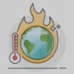
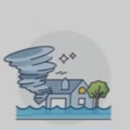

The consequences of global warming are profound and wide-ranging, affecting ecosystems, weather patterns,
and human societies worldwide. Some of the most notable effects include.
Rising Sea Levels
As global temperatures rise, polar ice caps and glaciers melt, contributing to rising sea levels.
This can result in the flooding of coastal regions and the displacement of millions of people.

Extreme Weather Events
Increased global temperatures intensify the frequency and severity of extreme weather events such as
heatwaves, hurricanes, droughts, and heavy rainfall. These events can cause destruction to
infrastructure, loss of life, and disruption of food and water supplies.

Loss of Biodiversity
Many species are unable to adapt to rapidly changing environmental conditions, leading to habitat
loss, extinction, and a reduction in biodiversity. This disrupts ecosystems and reduces the
resilience of natural systems.
Ocean Acidification
The excess CO2 in the atmosphere also dissolves into the oceans, causing them to become more acidic.
This affects marine life, particularly organisms with calcium carbonate shells, such as corals and
shellfish, which are vital to marine ecosystems.
Human Health
Global warming has a direct impact on human health, increasing the spread of diseases like malaria
and dengue fever, which are exacerbated by warmer temperatures and changing precipitation patterns.
Additionally, air pollution, another consequence of global warming, worsens respiratory conditions
and other health issues.